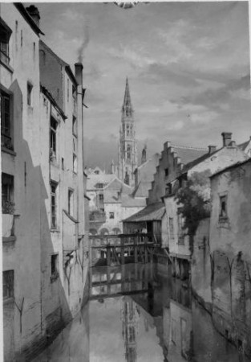
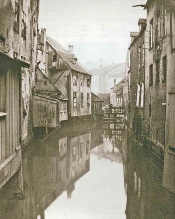
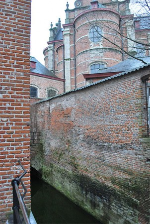

El blog-guía escrito por españoles en Bruselas para los hispanoparlantes que viven aquí y para los turistas que aprovechan los vuelos baratos para descubrir el chocolate, la cerveza, la Grand Place y tantas otras cosas buenas.
El productor Elias querejeta debuta como director con “Cerca de Tus Ojos” un documental que abre espacios de reflexión acerca de la desigualdad y la injusticia.
A través de los ojos de Maribel Verdu recorremos diversos lugares del planeta para indagar en injusticias e incumplimientos de los derechos humanos.
La proyección se realiza en colaboración con la Embajada Española y el Instituto Cervantes de Bruselas. Más información en la web del festival.
Álvaro Marín me ha retado a publicar el siguiente vídeo, cosa que hago con mucho gusto y con el buen regusto de una buena sarta de carcajadas. Hernández y Fernández explican la situación política en Bélgica con mucho humor, tal y como cabría esperar en la serie de libros X para tontos:
En Blog Bruselas, no nos gusta hablar de política, pero sí reírnos 🙂
Actualización: Sinuhe se ha pegado una panzada de las buenas traduciendo el texto al español (se nota que está acostumbrado con esto de los jeroglíficos que no le entiende nadie). ¡Gracias!
Traducción al castellano del diálogo de Dupont y Dupond (Hernández y Fernández), en el espectáculo “Sois Belge et tais-toi!” (¡Sé belga y cállate!)
– Bélgica es un País PLANO. [también significa “soso”]
– Yo aún diría más: es un “País Llano”… [apodo cariñoso de Bélgica]
– … que es el mío. [palabras de la canción “Le Plat Pays”, de Jacques Brel]
– Yo aún diría más: que es el mío.
– ¡No, el mío!
– Todo lo que es tuyo, es mío.
– Bueno, entonces Bélgica es un País Llano, que es el nuestro. No obstante…
– Yo aún diría más: no obstante.
– Bélgica está poblada por habitantes.
– De los cuales una parte son belgas.
– Yo aún diría más: una pequeña parte de la Patria.
– Los otros son walones, flamencos…
– …y bruselenses. Algunos tienen una cabeza bien rara.
– Yo aún diría más: una cabeza de turco.
– Y el cabeza de turco del walón es el flamenco…
– …y recíprocamente…
– …mientras que el bruselense, él, es turco [musulmán] en un 10% de los casos…
– …y no europeo en la mayor parte de los demás casos.
– Bélgica es, por lo tanto, una tierra de culturas [culture=cultura, ó también cultivo]
– Yo aún diría más: de cultivo de patatas.
– El resto del país está cubierto por autopistas casi por completo…
– …que son visibles desde la Luna, porque están iluminadas por la noche, cuando nadie circula.
– Para iluminarles más aún, sepan ustedes que Bélgica es una Monarquía CONstitucional [con=tonto, imbécil]
– Por ello, “anticonstitucionalmente” es la palabra belga más larga en francés.
– Y hoptontontontontonsteling [parodia de palabra en flamenco] es la palabra más larga en flamenco.
– El Walón va al Mar del Norte [la Costa Belga, toda ella en Flandes]
– Y el Flamenco viene a los Lagos de l’Eau-d’Heure. [están en las Ardenas, en Walonia; fonéticamente, el nombre suena también a “ODEUR”= olor]
– Yo aún diría más: el olor de las Ardenas atrae a los flamencos.
– Y el dinero de los flamencos ¡no huele!
– Entonces, el walón es incapaz de oler [sentir] al flamenco.
– Yo aún diría más: se las aregla MAL [s’entire= arreglárselas] en flamenco.
– El walón no comprende el [también “al”] flamenco…
– …mientras que el flamenco, por su parte, hace como que no comprende el francés.
– … o sea, que es bilingüe.
– Yo aún diría más: el flamenco habla con doble lenguaje…
– … está en su constitución [significa también “su naturaleza”]
– El flamenco quiere MÁS Flandes, y menos impuestos. [impôts]
– El walón quiere MENOS Flandes, y echarse un trago. [boire un pot]
– Por consecuencia, tenemos dos clases de belgas: el flamenco, que TRABAJA en el norte…
– … y el walón, que VIVE en el sur.
– En realidad, el belga viene de ninguna parte.
– Yo aún diría más: viene de ninguna parte, y parece estar regresando a ella.
– Porque el Estado Federal se convierte en CON-federal [con=tonto, imbécil]
– y el ciudadano, en CON-ciudadano.
– Yo aún diría más: amputado de ciertas competencias, el Estado Federal hará de nosotros CIRCO-CON-ciudadanos.
– Hablando de CIRC-unciso, el Rey…
– … es comunitariamente asexuado.
– ¡ El pobre ¡
– Está en la Constitución: el Rey no tiene prácticamente poder alguno.
– Yo aún diría más: los ministros, tampoco.
– En efecto, Bélgica tiene 3 regiones, seis gobiernos…
– … y siete asambleas legislativas,…
– … lo cual explica que ninguna verdadera decisión sea tomada jamás…
– … y que las decisiones tomadas, no lo son jamás de verdad.
– El hombre político belga, en efecto, aplaza continuamente su futuro para el día después.
– Y el futuro pertenece a aquél que se levanta ¡TEMPRANO!
– Es decir, al Gallo. [el Gallo es emblema de Walonia]
– ¡El Gallo Walón!
– Y paradójicamente, Le-Cocq [“El Gallo”] está en la costa flamenca… [Le-Cocq, De-Haan, ciudad costera de Flandes]
– … y el gallo walón hace un Cuco de Malinas. [receta de cocina belga, se cocina un gallo, y se llama ‘Cuco de Malinas’, una ciudad flamenca].
– Pero entonces… ¡Bélgica es absurda!
– Absurda. Es el término [le terme] que conviene.
– ¡LETERME! [líder político flamenco, de raíz y apellido walón]
– LETERME es walón, y Primer Ministro flamenco.
– y Van Couwenbergh… [antiguo líder político walón, de raíz y apellido flamencos] … es flamenco, y fue Primer Ministro Walón.
– ¡ Entonces… es el Mundo al Revés!
– Yo aún diría más: Bélgica es el lugar donde todo va al revés.
[Los dos cantan]:
Nuestro buen Rey Alberto dice:
“¡mi país funciona al revés!”.
“Que Vuestra Majestad se tranquilice,
nos estamos ocupando de remediarlo”.
“Pues qué bien”, ha dicho el Rey,
“¡que Dios lo vuelva al derecho!”
Lástima que tenga abandonado su blog, con la pluma que tiene.
¡Empieza la Euroferia de Bruselas! Gracias al equipo de Hispagenda por compartir la buena nueva:
Hola amigos:
Mañana comienza la EuroFeria andaluza, que vestirá al Atomium de “faralaes” del3 al 6 de junio.
El pistoletazo de salida tendrá lugar mañana a las 17 h. con la apertura de la décima octava edición de laEuroFeria, momento a partir del cual disfrutaremos de cuatro días de fiesta llenos de buen ambiente, música y espectáculos.
Este año, la EuroFeria contará, entre otras, con las actuaciones del grupo cordobés Estirpe, del guitarrista y cantante Rafael de Alcalá, de la bailaora Yulia Lazaretina y del conjunto de danza Pasión Española.
Raros son los neo-bruselitas hispanoparlantes que no conocen los bares de Saint-Géry, un barrio situado en una de las zonas de Bruselas que más intensamente experimentaron las transformaciones urbanísticas de la ciudad en el siglo XIX.
Un poco paradójicamente, hoy constituye una de las partes menos alteradas del antiguo espacio intra muros, conocido como le Pentagone; tanto el trazado de las calles como las fachadas apenas han sufrido alteraciones desde entonces, lo que la convierte en uno de los barrios antiguos mejor conservados del centro.
Antes de la transformación urbanística, el barrio era una isla formada por la Senne, el río de Bruselas. La isla formaba un gran círculo que iba desde la antigua iglesia de las Calrisas hasta la actual bolsa, poco más o menos. Había una segunda isla más pequeña muy cerca, allí donde está hoy la plaza Fontainas, donde el río bordeaba la iglesia de Nuestra Señora del Socorro. Ambas se distinguen bien en este plano de la ciudad de 1837.
Resulta divertido apreciar que la homofonía no es lo único que el río de Bruselas tiene en común con el de París.
A partir de 1867, se procedió a cubrir el río, por lo que hoy resulta invisible a los transeuntes; es lo que se conoce en francés como el Voûtement de la Senne . Hasta entonces Saint-Géry debió de ser un barrio pintoresco, laberíntico, sucio, popular, todo lo que el urbanismo del siglo XIX detestaba. Rodeado por canales parecidos a los que todavía hoy tiene Brujas, el barrio conservaba aún un aspecto medieval, lo que para la mentalidad de entonces quería decir insalubre.
Jean-Baptiste Van Moer, Vista de Bruselas, tomada en Saint-Gery, 1873, acuarela sobre papel, Bruselas, Ayuntamiento Foto: KIK-IRPA
Lo único que queda de la isla es el recuerdo, y el nombre de una de las calles que llevan al mercado de Saint-Géry, y que ha conservado en buena parte su antiguo trazado: la rue de la Grande-Île / Groot-Eilandstraat.
Vista de la Senne desde el puente du Miroir. Fotografía del siglo XIX
Del Sena nos queda un pequeño tramo visible precisamente a un paso del mercado, en un patio particular pero accesible durante el día.
La Senne a su paso por el centro de Bruselas, con la iglesia de las Clarisas al fondo. Foto: Routard
Gracias a Laure he descubierto otra joya de las canciones de cuna macabras en francés: Esta mañana el conejo ha matado a un cazador
Ce matin un lapin a tué un chasseur
Dans la forêt de l’automne
Ce matin est arrivée
Une chose que personne
N’aurait pu imaginer
Au bois de Morte Fontaine
Où vont à morte saison
Tous les chasseurs de la plaine
C’est une révolution, car,
{Le refrain} :
Ce matin un lapin
A tué un chasseur
C’était un lapin qui
C’était un lapin qui
Ce matin un lapin
A tué un chasseur
C’était un lapin qui
Avait un fusil
Ils crièrent à l’injustice
Ils crièrent à l’assassin
Comme si c’était justice
Quand ils tuaient le lapin
Et puis devant la mitraille
Venue de tous les fourrés
Abandonnant la bataille
Les chasseurs se sont sauvés, car,
{Le refrain}
Bien sûr ce n’est qu’une histoire
Inventée pour la chanson
Mais chantons-leur cette histoire
Quand les chasseurs reviendront
Et s’ils se mettent en colère
Appuyés sur leurs fusils
Tout ce que nous pouvons faire
C’est de s’en moquer ainsi:
{Le refrain}
Ce matin un lapin
A tué un chasseur
C’était un lapin qui
Avait un fusil
Dirán que fue en legítima defensa, pero no, no, no: el conejo lo hizo con premeditación y alevosía… ¡y además con tralalá!